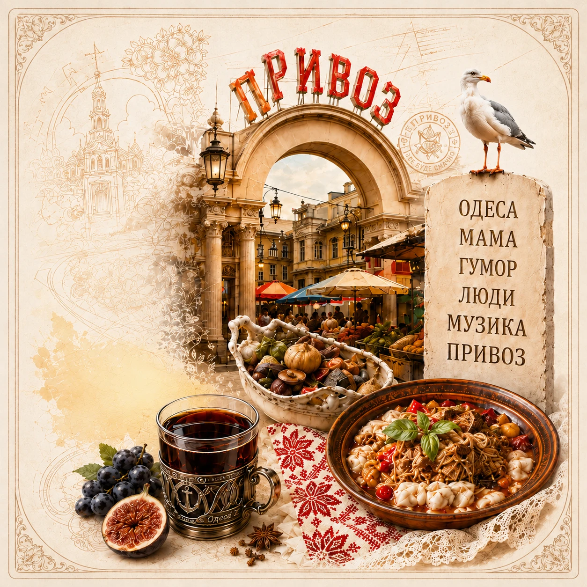

Одеса в серці: вечір української пісні у Варшаві
Теплий концерт з ароматом моря, спогадів і щирих емоцій. Дякуємо всім, хто був разом з нами!
Читати даліДжерело: Radio Prywoz (оригінал)
Актуальні новини для українців у Польщі та світі. Культура, події, важливі зміни та життя громади.
Теплий концерт з ароматом моря, спогадів і щирих емоцій. Дякуємо всім, хто був разом з нами!
Читати даліДжерело: Radio Prywoz (оригінал)

Дивіться найкращі ефіри, інтерв'ю та музичні програми на нашому офіційному каналі.
Читати даліДжерело: Radio Prywoz (оригінал)

Святкуємо нашу культуру разом! Концерт, ярмарок та родинна атмосфера чекають на вас.
Читати даліДжерело: Facebook / партнер

Огляд важливих змін у законах, виплатах та перебуванні.
Читати даліДжерело: suspilne.media

Незабутній вечір єдності, музики та підтримки.
Читати даліДжерело: Radio Prywoz (оригінал)

Готуємо улюблені українські страви разом та збираємо кошти на добрі справи.
Читати даліДжерело: Facebook / партнер

Нові дороги, мости та транспортні проєкти, які змінять регіони країни.
Читати даліДжерело: PAP.pl

Яскраві виступи, традиції та весняний настрій у серці міста.
Читати даліДжерело: Radio Prywoz (оригінал)
Актуальна інформація про виплати, житло, медицину та освіту.
Читати даліДжерело: inpoland.net.pl

Найкращі українські треки, які надихають. Слухайте в ефірі та на нашому сайті.
Читати даліДжерело: Radio Prywoz (оригінал)